Intune Compliance Policies
After the MFA exercise I wanted to go deeper into access policies. I wanted to create a policy that would determine whether a device/workstation is compliant with my company policy or not, then link it to a Conditional Access policy that would allow access only for devices which are compliant. This page covers building and testing the compliance policy, then linking it to a Conditional Access policy.
Creating the Compliance Policy
Intune admin center → Compliance (under "Manage devices") → Create Policy
I selected the platform as Windows 10 and later and configured the desired compliance settings:
- BitLocker
- Minimum OS version — entered as the earliest version WS_01/WS_02 are currently running
- Require passwords
- Defender: Real-time protection
For non-compliance actions, "Mark device noncompliant" was automatically configured to Immediately.
The group I chose for testing was EL_SysAdmins — a user group with a sample size of 2 users. Then I clicked Create.
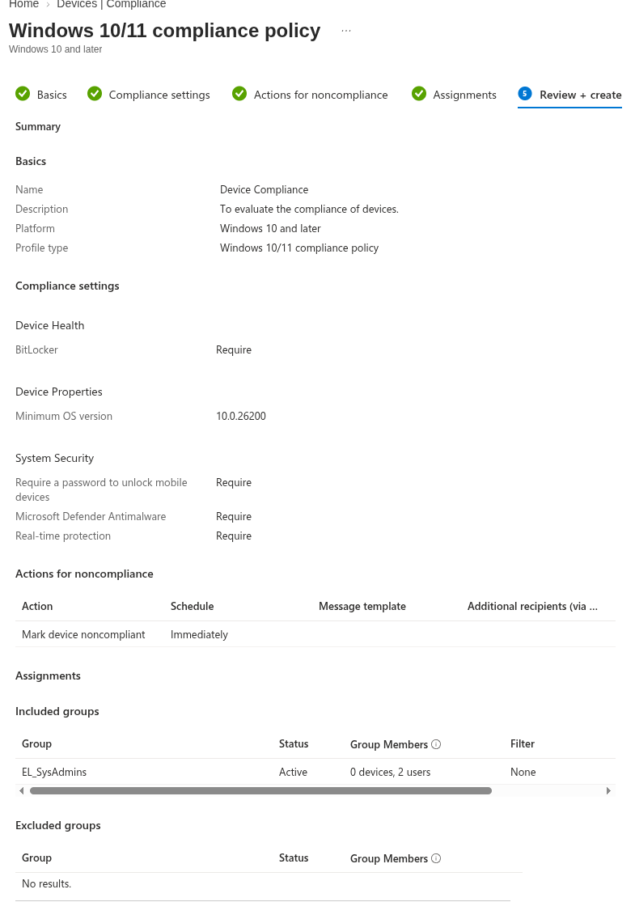
To test, I logged in to WS_01 as Administrator so I could sync with Entra before testing:
Settings → Accounts → Access work or school → (Entra domain) → Info → Sync
First Test — Policy Not Reaching the Device
The compliance policy was assigned to EL_SysAdmins, a user group, but drilling into WS_01's device compliance status showed no real evaluation against my custom policy at all — instead it showed the Default Device Compliance Policy fallback, with:
Has a compliance policy assigned
Error 65001 (Not applicable)
This is Intune's built-in fallback policy stepping in because, as far as the device is concerned, no custom compliance policy actually applies to it. The reason became clear once I thought about how WS_01 was enrolled and how my workstations are organised. A compliance policy assigned to a user group only reaches a device through that device's primary user, and WS_01's primary user was whichever account completed enrolment (Administrator), not a member of EL_SysAdmins. On top of that, my workstations sit in their own OU on-prem, but OUs have no equivalent in Entra/Intune: every Intune assignment needs a real Entra security group, so there was no existing group I could simply point the policy at for the workstations.
User-group assignment didn't match the device's primary user
Assigning a compliance policy to a user group works when the group's members are also the device's primary user. Since WS_01's primary user was set by whichever account completed enrolment (Administrator, not one of the actual named users), the user-group assignment never reached it. Assigning to a device group removes the dependency on the primary user entirely, which is why it suited this lab better.
Building a Device Group for the Workstations
I had to add the workstation to a group so the compliance policy could be applied to the workstation rather than a user. I created the group in Intune via:
Groups → New Group
- Group type: Security
- Name:
Intune Workstations - Membership type: Dynamic Device
- Rule:
(device.displayName -startsWith "WS_")
So any device that follows my naming convention gets added to this group dynamically. After around 5 minutes, the workstations were added to the group.
You cannot manually add members to a dynamically-membered group
I tried adding WS_01 to the group manually before the dynamic rule had picked it up, and got: "Failed to add group member — Unable to add the selected members. This may be due to a permission or policy restriction." Once a group's membership type is set to Dynamic Device, membership is computed exclusively by the rule engine — manual additions are blocked outright, regardless of whether the rule itself is correct. The fix isn't to force a member in; it's to wait for the rule to evaluate, or fix the rule if it isn't matching.
I then added the Intune Workstations group to the compliance policy's assignment, and removed EL_SysAdmins.
Still Not Evaluating After the Reassignment
Even after reassigning to the device group, WS_01's device compliance status was still showing the same signal as before:
Has a compliance policy assigned
Error 65001 (Not applicable)
Is active
Compliant
Enrolled user exists
Compliant
for the Default Device Compliance Policy — meaning the tenant was still falling back rather than evaluating my custom policy against WS_01. I worked through:
- Confirming the
Intune Workstationsgroup was genuinely listed under Included groups on the custom policy's Assignments tab, not just populated as a group on its own - Checking the policy's Monitor tab for a device count, to see whether the assignment had registered at all
- Allowing for propagation delay — group membership and policy assignment changes don't apply to a device instantly, and a forced device Sync doesn't guarantee the backend has processed the reassignment yet
Resolution — Onboarding to Microsoft Defender
The compliance policy includes the Defender: Real-time protection requirement, so the next step was onboarding the workstations to Microsoft Defender for Endpoint (see my MS Defender notes). After that, and after adding WS_02 to the domain, all devices showed as compliant.
Compliance policy now evaluating and passing
With the device group assignment in place and the workstations onboarded to Defender, WS_01 and WS_02 both report as compliant against the custom policy.
Testing That the Policy Detects Non-Compliance
I wanted to confirm that the compliance policy would update if a device was no longer compliant, so I changed the minimum OS version from 10.0.26200 to 40.0.26200 via:
Intune → Devices → Compliance → (select the policy) → Properties → Edit "Compliance settings"
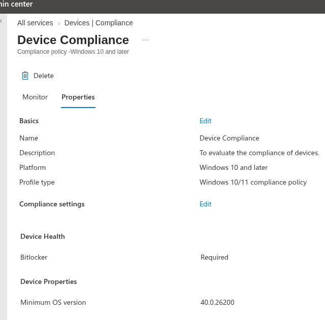
Why the OS version rather than turning off Defender
My first idea was to switch off real-time protection on a workstation, but the toggle was greyed out even when signed in as an admin, and a PowerShell attempt and a GPO couldn't change it either. That's most likely Tamper Protection, which stops real-time protection being changed locally once the device is managed and onboarded to Defender. Raising the minimum OS version tests the same thing (does the policy catch a failing rule and update the device's status) without touching the endpoint.
Then I checked the device list in Intune. (Note that I only powered on WS_02 for this test.) I could see that WS_02 was no longer compliant.
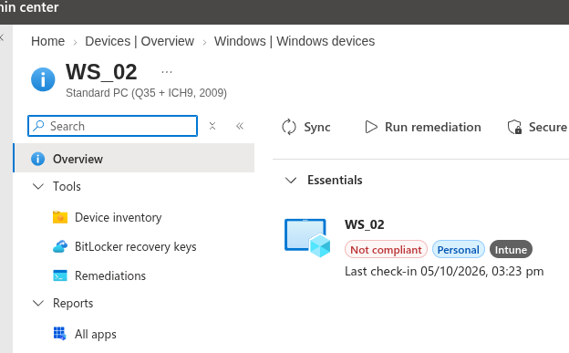
Drilling down on the non-compliance, by clicking the red Not compliant banner under WS_02's profile name and then the non-compliant policy, I could see that the only non-compliance was correctly showing as the minimum OS version.
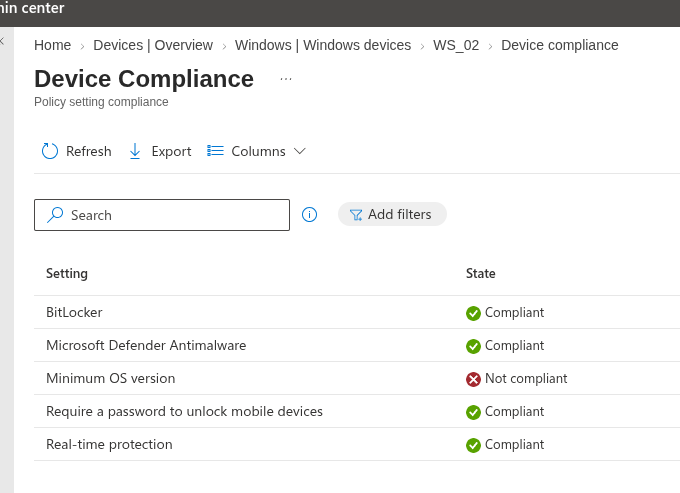
After this verification, I reverted the OS version to the previous value and then synced WS_02 in Intune to verify that the device was compliant once again.
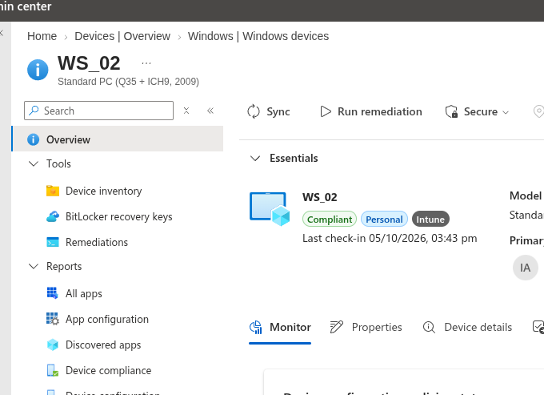
Compliance policy confirmed working in both directions
The policy flagged WS_02 as non-compliant when a rule was no longer met, identified the exact failing setting, and returned the device to compliant once the setting was reverted and the device synced.
Tenant-Wide Fallback Setting
As a final hardening step, I set the tenant-wide compliance setting to treat devices with no assigned policy as non-compliant:
Intune → Devices → Compliance → Compliance policy settings → "Mark devices with no compliance policy assigned as" → Not compliant
This is the setting behind the Default Device Compliance Policy fallback seen earlier. With it set to Not compliant, a device that no compliance policy reaches is no longer treated as compliant by default, which matters once Conditional Access starts relying on compliance.
Conditional Access Policy - Device Access
I then worked to create the access policy to deny or grant access based on device compliance.
Entra admin center (Identity app) → Entra ID → Conditional Access → Policies → New policy
- Named it "Device Compliance Policy"
- For Users, I added the
EL_SysAdminssecurity group so I could test with a small sample size once again - For Target resources, I selected All resources (formerly "All cloud apps")
- I left Conditions as the default "not configured" options
- For Grant, I selected Require device to be marked as compliant and Require Microsoft Entra hybrid joined device
- Then I created the policy in Report-only mode
Two grant controls selected together
With more than one grant control selected, the default is that all the selected controls must be satisfied. A device therefore has to be both compliant and hybrid joined to get in.
Testing in Report-Only Mode
I booted up WS_02, signing in as David Lightman. I opened Edge and signed in as David to access an M365 app, going via myaccount.microsoft.com and then accessing Outlook, SharePoint and Teams.
Then I booted up another VM I had, which had a Windows 11 Home licence (so it is neither enrolled in Intune nor hybrid joined). I opened Edge and followed the same steps as I did on WS_02, signing in as dlig@earthlocal.onmicrosoft.com.
Afterwards I gave it a few minutes for the logs to generate, then went to check my policy to see what would be reported. As before, there are a few ways to check the impact of a Conditional Access policy.
For a quick look:
Intune → Devices → Conditional Access → Policies → Device Compliance Policy → Policy Impact → Date range "Last 24 hours"
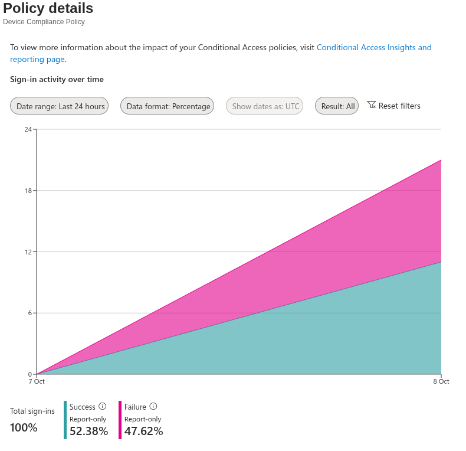
Drilling down from the chart
Clicking on the success or failure portion of the chart shows some logs which can be drilled down on. The drill-down leads to the same place as the more comprehensive view below.
For a more comprehensive view of the logs:
Entra admin center (Identity app) → Monitoring & health → Sign-in logs → Select a log → Report-only tab
I selected an earlier Teams sign-in log (from WS_02) and validated the policy was successful.
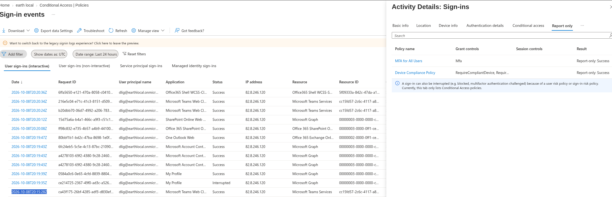
Then I took a look at a later Teams sign-in log (from the Windows 11 Home VM) and validated that the policy would apply, showing a failure.
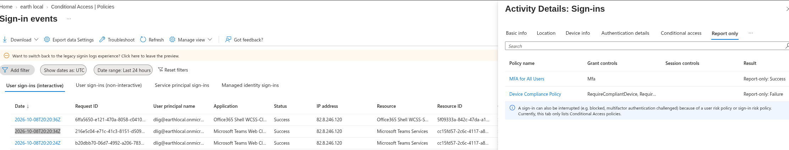
Drilling down on the policy name confirmed the grant controls were not satisfied in the second sign-in attempt, as expected.
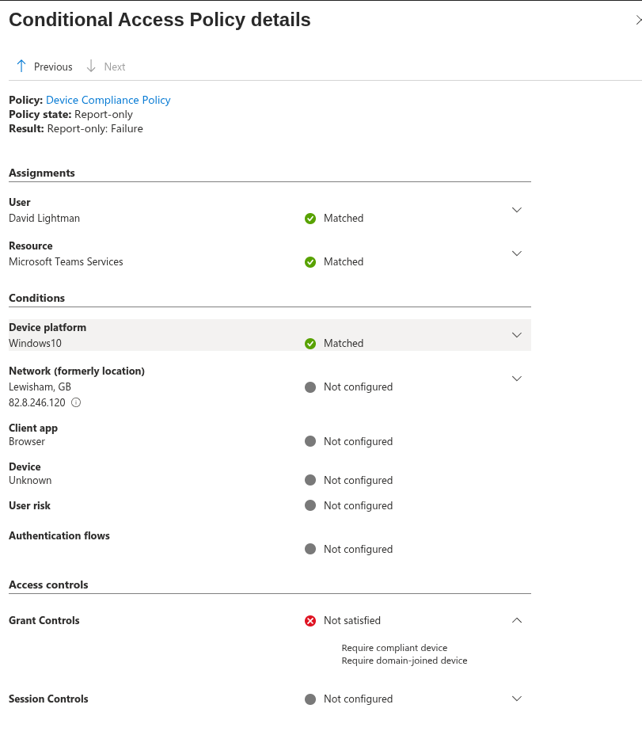
Enforcing the Policy
For a final test I turned the policy fully On and tried to sign in from the Windows 11 Home VM, expecting to see a failure of some sort.
This time when signing in to myaccount.microsoft.com I was unsuccessful. I was asked to sign in with a work account or switch the Edge profile to that work email.
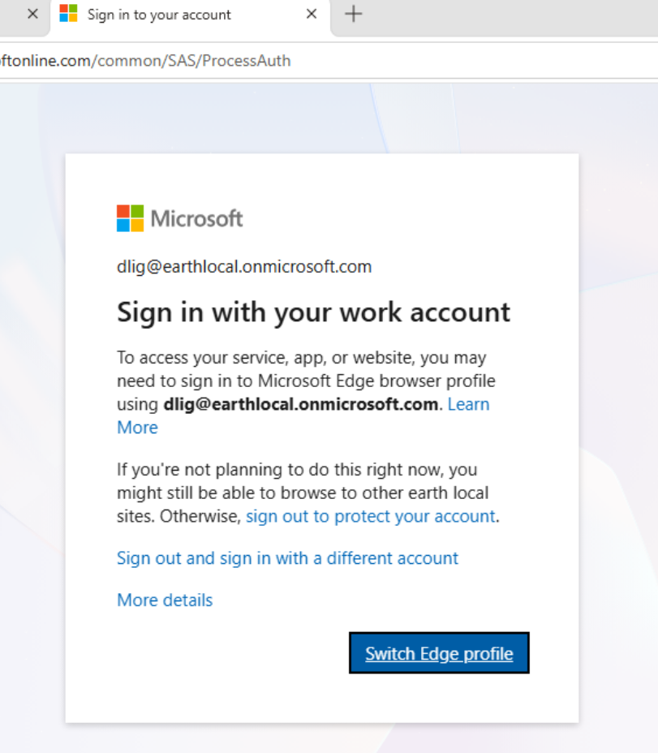
I tried the switch Edge profile option and that failed also.
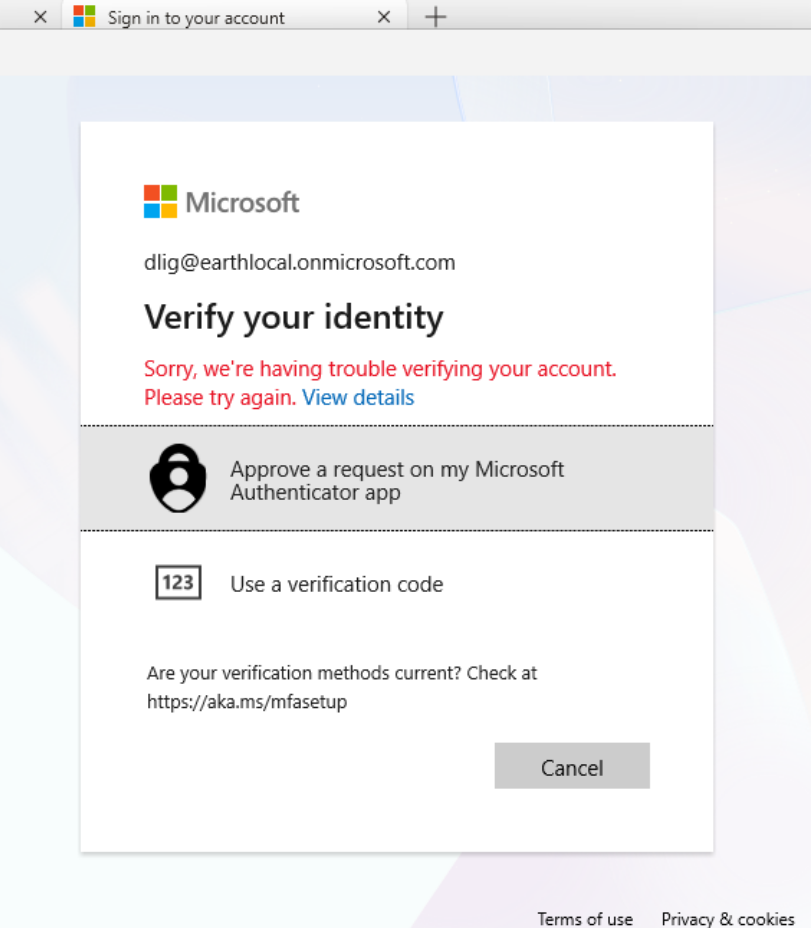
This confirmed the block was active.
Compliance now enforced through Conditional Access
The compliance policy decides whether a device is healthy, and the Conditional Access policy acts on that result at sign-in: the compliant, hybrid joined WS_02 was evaluated as a success, and the unmanaged Windows 11 Home VM was evaluated as a failure in Report-only mode and then blocked once the policy was turned on.
Final Validation Summary
| Test | Result |
|---|---|
| Compliance policy created (BitLocker, min OS version, passwords, Defender) | ✅ Done |
Initial assignment to EL_SysAdmins (user group) |
❌ Never evaluated against WS_01 — Default policy fallback (error 65001) |
| Root cause: WS_01's primary user was Administrator, not in the group; OUs have no Entra equivalent | ✅ Identified |
Dynamic device group Intune Workstations created |
✅ Done |
| Manual add to dynamic group | ❌ Fails by design — dynamic groups don't accept manual membership |
| WS_01 added to dynamic group automatically | ✅ YES, after ~5 minutes |
| Compliance policy reassigned to device group | ✅ Done |
| Custom policy evaluating against WS_01 | ✅ Resolved — still showed the Default fallback straight after reassignment, then evaluated after Defender onboarding and WS_02 joining |
| Workstations onboarded to Microsoft Defender for Endpoint | ✅ Done (see MS Defender page) |
| WS_01 and WS_02 compliant against the custom policy | ✅ YES |
Minimum OS raised to 40.0.26200: WS_02 flips to non-compliant |
✅ YES |
| Drill-down shows only the minimum OS rule failing | ✅ YES |
| OS version reverted and WS_02 synced: back to compliant | ✅ YES |
| Tenant setting: devices with no policy marked Not compliant | ✅ Done |
Conditional Access policy created (compliant + hybrid joined, Report-only, EL_SysAdmins) |
✅ Done |
| Report-only: WS_02 sign-in (compliant, hybrid joined) | ✅ Success |
| Report-only: Windows 11 Home VM sign-in (unmanaged) | ✅ Failure reported, grant controls not satisfied |
| Policy turned On: Windows 11 Home VM sign-in blocked | ✅ YES |
Key Takeaways
- A user-group assignment only reaches a device through its primary user, so a device group is the more reliable target. The primary user isn't always who you expect, especially if enrolment was done interactively under a different account. User groups still work when the primary user is a member; a device group simply doesn't depend on it.
- OUs have no equivalent in Entra or Intune. Any assignment — compliance policy, Conditional Access, configuration profile — needs an actual Entra security group. A dynamic device group with a naming-based rule is the practical substitute for an on-prem OU.
- Dynamic groups compute membership exclusively from their rule. Manual "Add member" attempts are rejected outright, which produces a generic permission-style error that has nothing to do with the rule's correctness.
- A compliance policy is only as good as the signals behind it. The Defender real-time protection requirement only became meaningful once the workstations were actually onboarded to Defender for Endpoint, and compliance came through after that.
- A policy that only ever shows "compliant" hasn't proven anything. Deliberately failing a rule (here, an unreachable minimum OS version) showed that the policy detects a failing setting, names the exact rule that failed, and recovers once the setting is reverted and the device syncs.
- A compliance policy only evaluates; Conditional Access is what enforces. On its own, a non-compliant status is just a label in Intune. Linking it to a Conditional Access grant control is what turns it into an actual block at sign-in.
- Report-only first, then enforce, works for device policies too. The Policy Impact chart and the per-sign-in Report-only tab showed which sign-ins would pass and fail before anything was blocked, using the same approach as the MFA policy.
- The Default Device Compliance Policy fallback (error 65001, "Has a compliance policy assigned — Not applicable") is a diagnostic signal, not just noise. Seeing it persist after reassignment means the real policy still isn't reaching the device — worth checking assignment scope and propagation delay before assuming a settings problem.